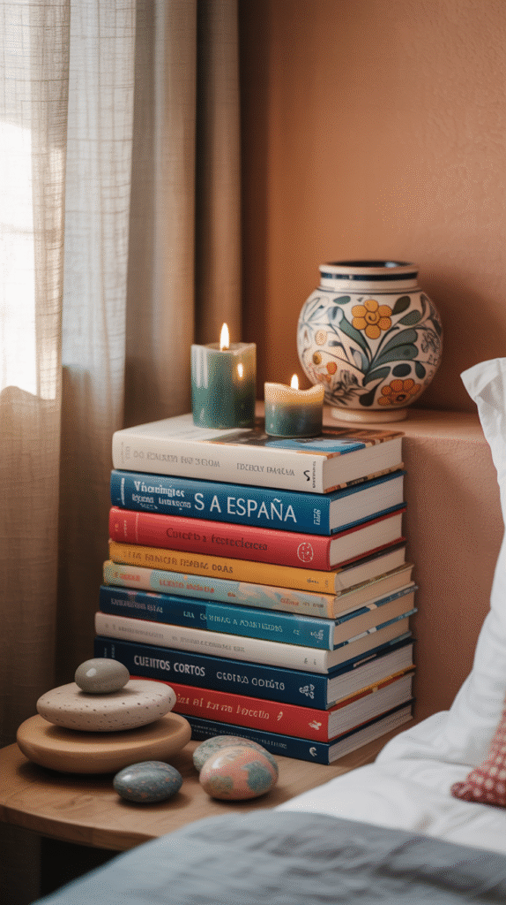
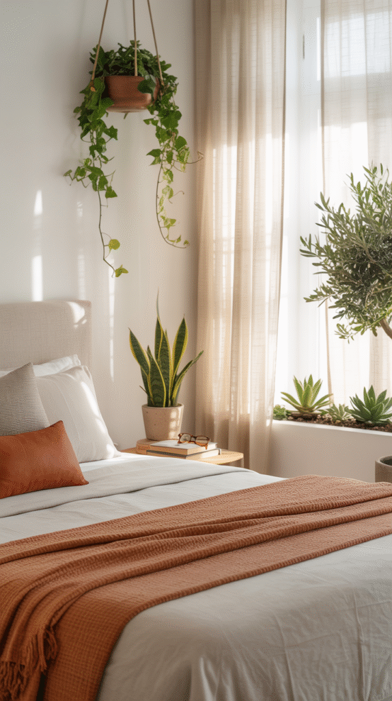
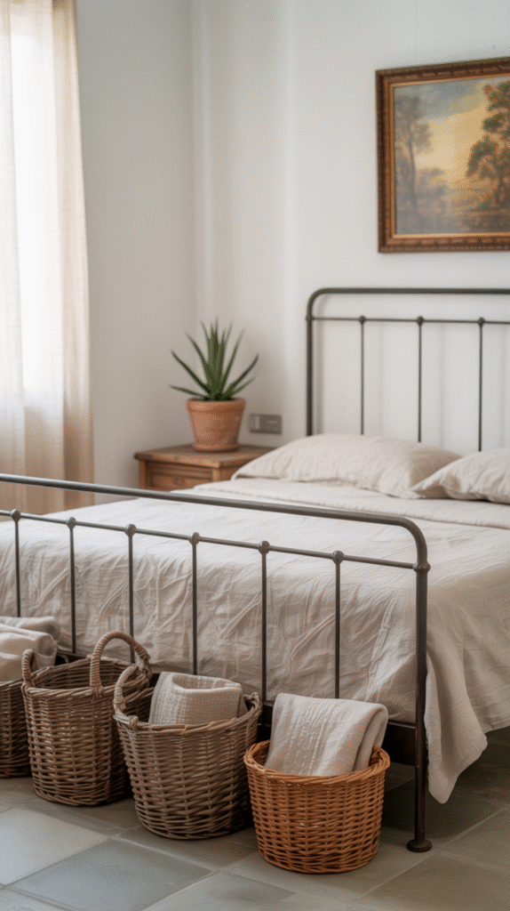
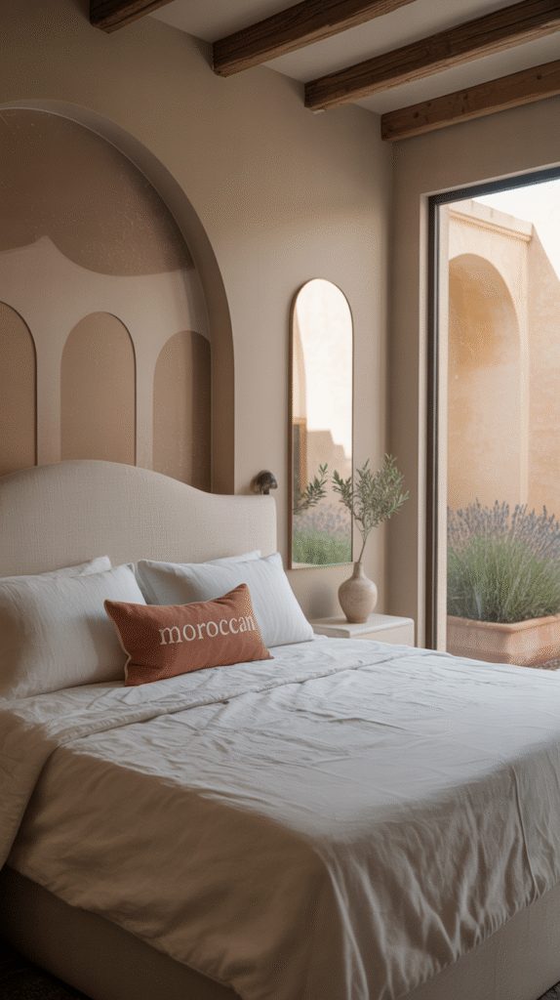
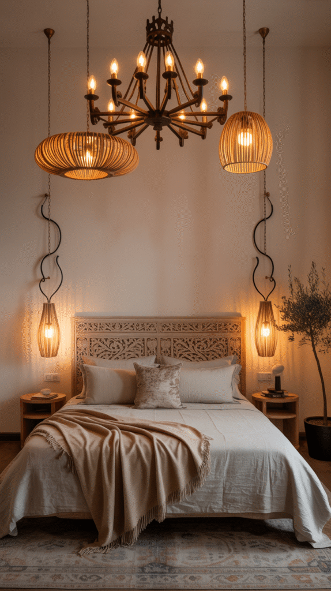
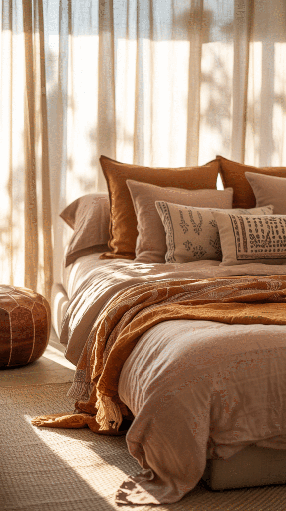
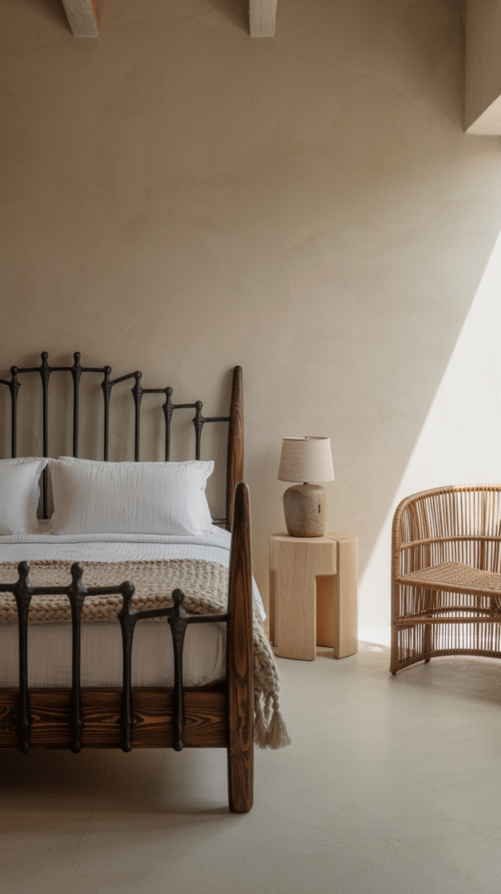
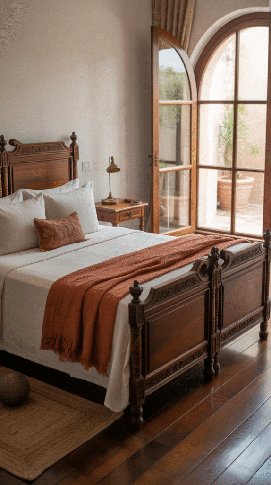
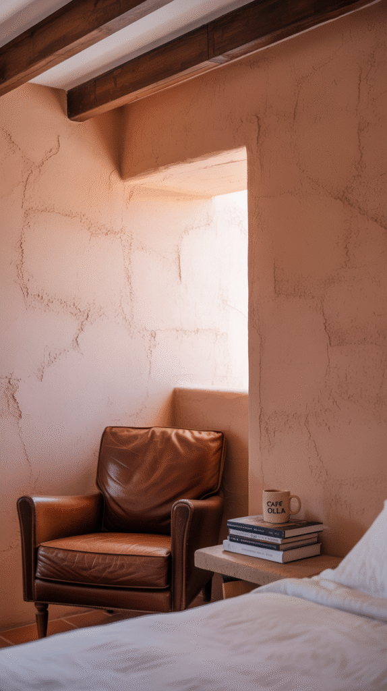
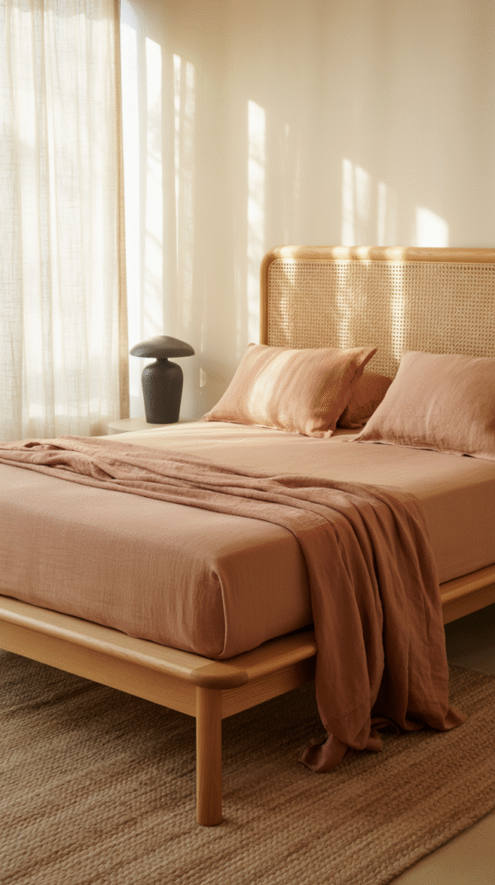

A modern Spanish bedroom comes together in a specific order, palette and surfaces first, then furniture and textiles, then the smaller personal layer.
This walks through that sequence for a bedroom specifically, where the goal is genuine rest, not just a styled photo.

Personalize It
A meaningful object, a piece of art tied to a real memory, or a color choice that's genuinely personal makes the room feel like an actual sanctuary, not a styled rental unit.
This final layer is what genuinely separates a technically correct Spanish-style bedroom from one that actually feels like it belongs to someone specific living there.

Add Calming Greenery
A simple, low-maintenance plant brings the Mediterranean's outdoor connection into the bedroom without adding any maintenance stress to a room meant for rest.
One well-placed plant works better here than several smaller ones scattered randomly around the room.

Keep Decor Minimal but Meaningful
A few considered objects, real texture, genuine material, a specific personal meaning, outperform a fully decorated room trying to include every element of the style at once.
This restraint is central to the style succeeding as a restful bedroom, not just a styled room.

Embrace the Architecture
An arched doorway, a niche, or exposed beams bring genuine Spanish architectural character into the room, and where the real architecture doesn't exist, a faux arch or similar detail can approximate it.
This single detail does more for authenticity than any amount of decor layered on top of an otherwise plain rectangular room.

Light It Warm
Warm-toned bulbs and layered sources, a bedside lamp, a wall sconce, soft ambient light, keep the room feeling restful rather than clinical.
A cool-toned bulb undoes much of the warmth built up through the palette and materials, making this one small detail genuinely worth getting right from the start.

Add Textiles That Tell a Story
Handwoven blankets, embroidered pillows, and natural-fiber bedding bring genuine texture and a sense of history into the room.
This layer is where a lot of the room's warmth actually comes from, more so than the wall color or furniture alone.

Choose Furniture That Blends Old and New
Clean modern silhouettes in genuinely old-world materials, solid wood, wrought iron details, leather, capture the style's real balance between contemporary comfort and traditional craftsmanship.
A single statement piece, like a hand-carved headboard, does more for the room's character than a fully matched furniture set.

Choose the Right Flooring
Terracotta tile, natural stone, or warm wood all suit this style far better than carpet, which works against the grounded, earthy feel the rest of the room is building toward.
A natural-fiber rug can add softness underfoot without needing to compromise on the flooring material itself.

Get the Walls, Ceiling and Texture Right
A textured plaster finish, exposed beams, or simply a warm, slightly imperfect wall treatment does more for authenticity than flat, perfectly smooth walls ever will.
This step matters more than most people expect, since texture is doing a lot of the room's visual work in a palette this restrained.

Start With the Color Palette
Warm terracottas, sandy neutrals, and deep earthy accents set the room's entire mood before anything else gets chosen.
This decision should get locked in first, since every later choice, furniture, textiles, decor, gets selected in relation to it.

Make It a Vibe
None of these 10 steps need to happen in a single weekend.
Start with the palette and the flooring first, since both anchor everything else in the room, then build toward furniture, textiles, and the personal layer gradually over time.
A modern Spanish bedroom done well feels like a genuine retreat from the rest of the day, not just a photo-ready room meant purely for looking at.